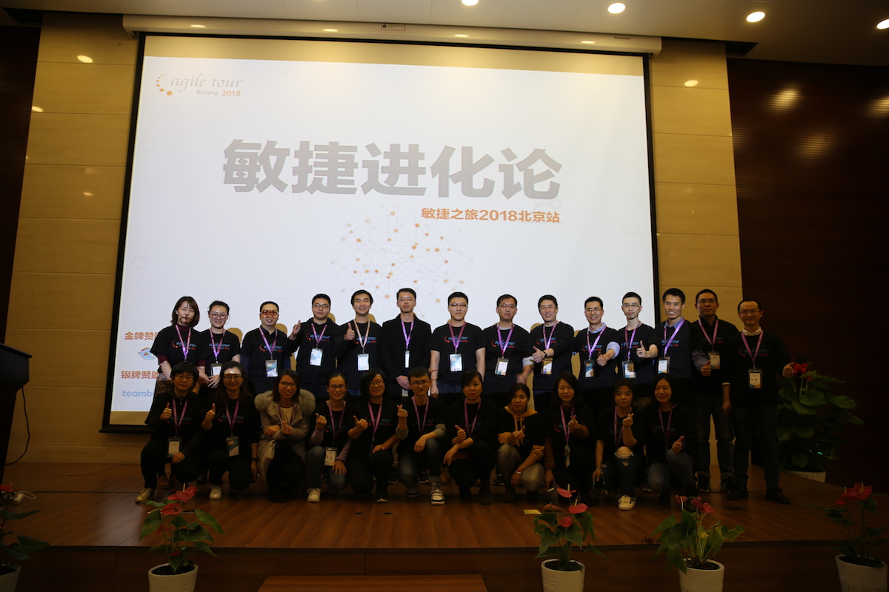

BJ2026MEETSHARE
LOCAL COMMUNITY北京 / 01
ONE CITY · MANY PRACTICES
SCROLL TO DISCOVER
01 / 北京社区
在一座城市里，
和同频的人见面。
北京敏捷之旅社区，致力于在北京地区推广敏捷的实践经验，传播敏捷实践方法；建立敏捷学习圈子，让敏捷爱好者彼此建立联接。
02 / 2026 活动介绍
线上与线下，
都在北京发生。
今年的活动一半面向屏幕，一半回到现场。你可以从任何一个入口加入北京敏捷社区。
03 / 2026 活动日历
正在发生的
北京敏捷现场。
从 Agentic AI 到个人成长，从线上对谈到线下共创。2026 年，我们继续在北京见面。
19JUL / 2026
从碳基协作到硅基自治：Agentic Agile 3-4-3 研发治理体系解析
面对 AI 原生组织的新课题，探索研发治理与团队协作的下一种可能。
15JUL / 2026
Agentic AI：打造自主执行的 AI 办公工作流
把 AI 从问答工具带到可以自主完成工作的协作者。
14JUN / 2026
当“小龙虾”退烧：OpenClaw 落地实战、踩坑与自主 AI 的未来
从热潮回到实践，拆解自主 AI 的真实落地路径。
17MAY / 2026
AI 时代，最值钱的能力是什么？
一起重新审视人的判断力、创造力与协作力。
19APR / 2026
项目管理 4.0：利用 AI Agent 破译密码
22MAR / 2026
成长破局：开启你的心智导航
01FEB / 2026
第二曲线：把你的经验变成精品课
18JAN / 2026
挑战 5 分钟：用 IMA 知识库复刻你的“爆文生产线”
